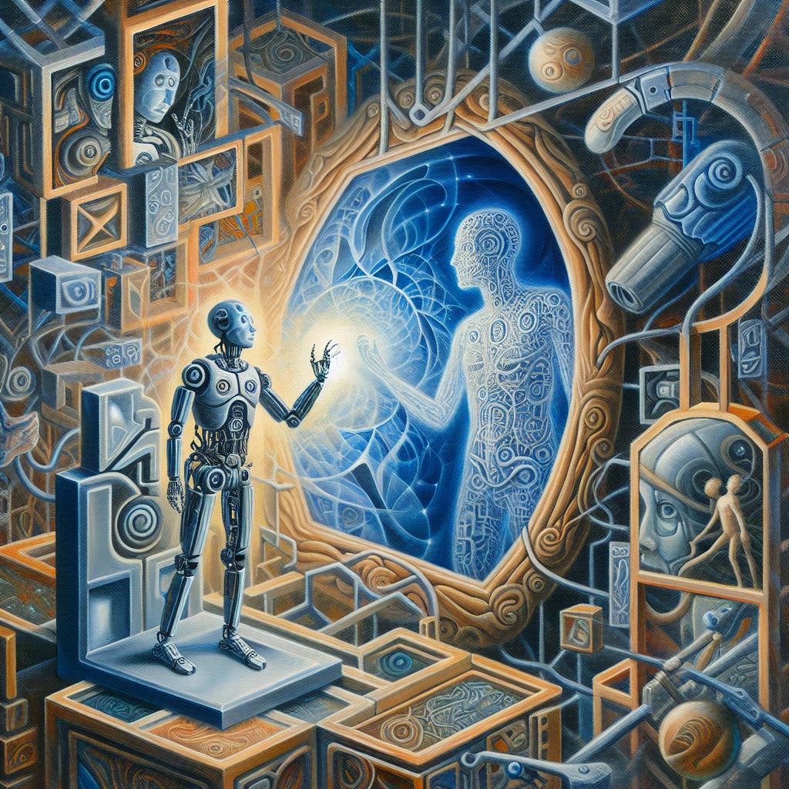

Is AI crippled without an awareness of a physical body?
Artificial Intelligence (AI) has made remarkable progress in recent years, with applications ranging from autonomous vehicles to natural language processing. However, despite these advancements, there is a growing concern that AI may be limited by its lack of a physical body.
When we talk about AI, we often refer to it as an abstract concept, a machine capable of processing vast amounts of data and making decisions based on algorithms. But what if this lack of embodiment is holding AI back?
One area where this limitation becomes apparent is in machine learning. Machine learning algorithms are designed to learn from data and make predictions or decisions based on that data. However, without a physical body to interact with the world and gather new information, AI may struggle to adapt and learn in real-time.
Consider the example of a self-driving car. While AI algorithms can be trained to recognize and respond to different traffic scenarios, they lack the ability to physically experience those scenarios. They cannot feel the impact of a sudden stop or the vibrations of the road. This lack of physical feedback may lead to unexpected failures or suboptimal decision-making.
Another perspective on this issue comes from studying cognition in unicellular animals. These organisms, such as bacteria or amoebas, lack a centralized nervous system yet display remarkable adaptive behavior. They can navigate their environment, find food, and avoid obstacles without a physical body like humans or animals. This suggests that embodiment may not be a prerequisite for cognitive abilities.
However, even in these cases, there is some form of physical interaction with the environment. Bacteria respond to chemical gradients, amoebas sense and move toward food sources. These interactions provide feedback that allows these organisms to learn and adapt.
So, what can be done to address this limitation in AI? One potential solution is the development of physical embodiments for AI systems. This could involve integrating AI algorithms into robots or other physical platforms that can interact with the world. By providing a physical body, AI systems can gather real-time sensory data and learn from physical experiences.
Another approach is to simulate physical interactions using virtual reality or other simulation techniques. This would allow AI systems to gather feedback and learn from virtual environments, even without a physical body.
In conclusion, the lack of a physical body may be limiting the potential of AI systems. By providing AI with a physical embodiment or simulating physical interactions, we can overcome this limitation and enable AI to learn and adapt in a more robust and realistic manner. As researchers and developers continue to explore the possibilities of AI, considering the role of embodiment will be crucial in unlocking its full potential.